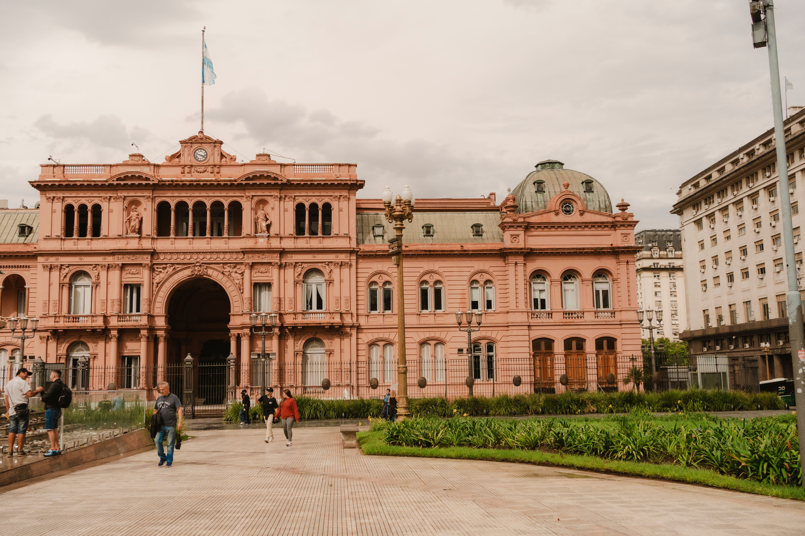

An expansive view of Argentina's historic central square.
Plaza de Mayo is the oldest and most important public square in Buenos Aires. It was built all the way back in 1580 by Juan de Garay. Since then, it has been the main gathering place for the country's biggest political movements and protests. If you want to look into the history of the neighborhood, you can find more information on the Buenos Aires City Portal.
The Pink House

The "white house" of Argentina.
On the east side of the square sits the Casa Rosada, which translates to "The Pink House." This is the official office of the President of Argentina. People say the unique pink color was picked in the late 1800s to mix the colors of opposing political groups and bring peace. You can read about the building history at the Casa Rosada Official Site.